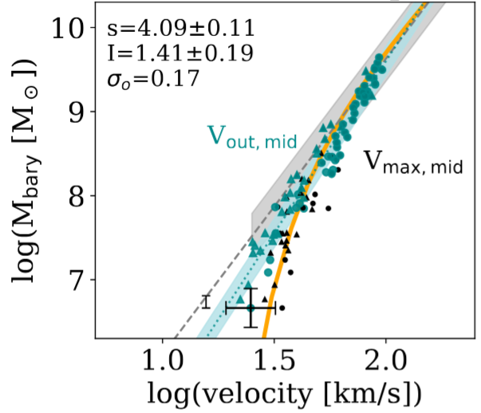
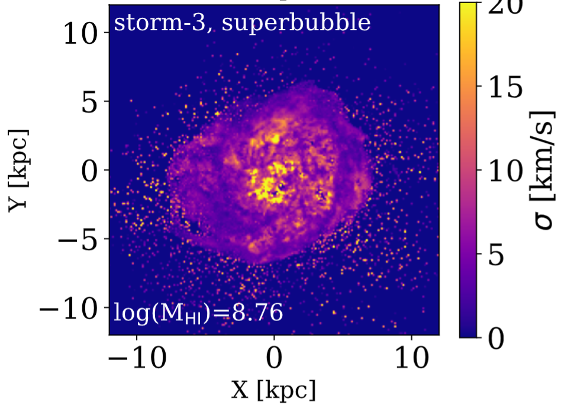
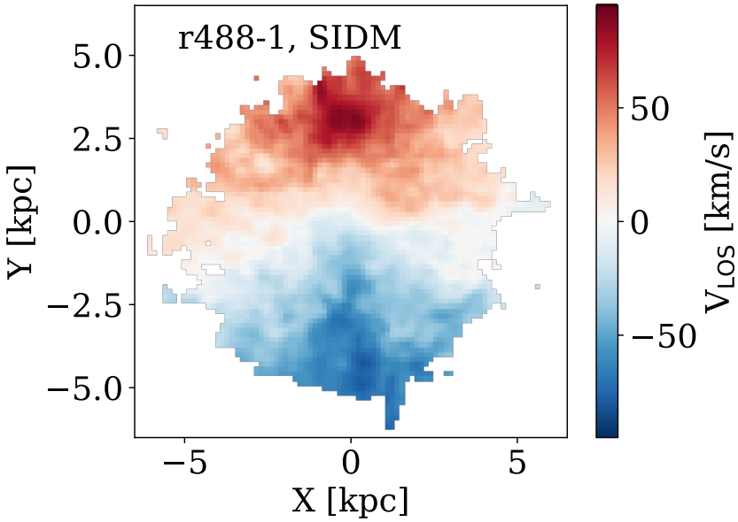
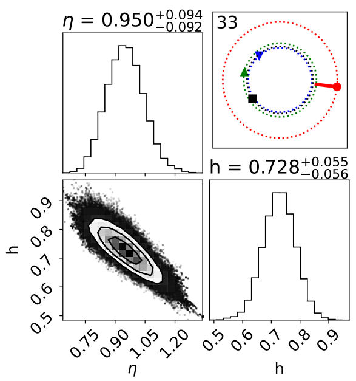
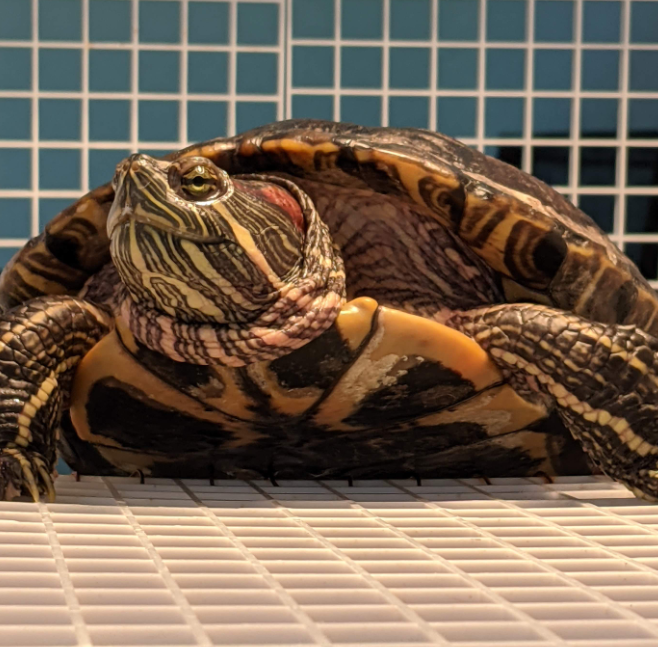
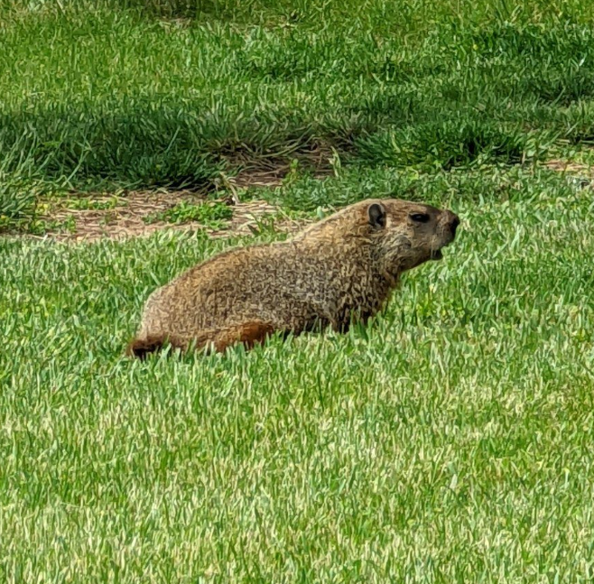
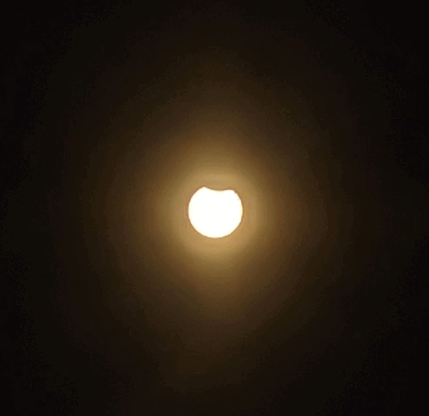

Dilys Ruan
Ph.D. Candidate, Rutgers University, Dept. of Physics & Astronomy
About Me
Dilys Ruan || my name is pronounced like "De-lise" || email: druan---AT---physics.rutgers.edu || Chinese-American || she/her
I was born and raised in Albuquerque, New Mexico (the 505)! Currently I reside in New Brunswick, New Jersey. Here's my CV.
Education
(2020-2026) Rutgers University, Ph.D. program in Dept of Physics and Astronomy -- Advisor: Dr. Alyson Brooks
(2016-2020) University of New Mexico, B.S. in Astrophysics -- Advisor: Dr. Gregory Taylor
RESEARCH OVERVIEW
Interests: Dark Matter, Galaxy Formation, Dwarf Galaxies, Hydrodynamic Simulations, HI kinematics, stellar kinematics, galaxy-halo connection
I'm interested in how dark matter and baryonic physics influence the evolution of galaxies. Dwarf galaxies are more sensitive to gas processes because of their low masses, so they are the perfect laboratories to explore both aspects! Neutral hydrogen (HI) is the most abundant gas in the ISM, and extends further out than stars in galaxies. My research focuses on studying dark matter through HI and stellar kinematics in simulated dwarf galaxies. From simulation data, I generate HI rotation curves, emission profiles, and maps of velocity, dispersion, column density, and star formation to compare with observations. My advisor is Dr. Alyson Brooks, and I am part of the N-Body Shop Collaboration which makes astrophysical simulations with the code Gasoline and ChaNGa. Our work is also in collaboration with the Merian survey. In 2025, was awarded the NASA FINESST Fellowship for my proposal "Disentangling CDM versus SIDM through HI Kinematics"! Now I am finishing up my Ph.D. (expected defense date in July 2026) and applying for postdocs.
Software/packages that I have worked with: Pynbody, TIPSY, MARTINI, pyBBAROLO, halotools, emcee, GALA, lensmodel, pyGRAVLENS, AIPS
RESEARCH PROJECTS

Turndown in the bTFR
The baryonic Tully-Fisher Relation (bTFR) is an empirical power law slope between a galaxy's baryonic (stellar + gas) mass versus its rotation speed. Simulations predict a 'turndown' for dwarf galaxies because of their suppressed baryonic content. I predict this turndown in the bTFR can only be predicted with spatially resolved HI velocities in the outer regions of galaxies (where the gas is more diffuse)!

Rotation versus Pressure Support in Dwarf Galaxies
V/σ is a galaxy's rotation velocity (V) divided by its velocity dispersion (σ). This is one way to quantify non-circular motion in galaxies! There seems to be a gap between this value for low-mass dwarf galaxies (V/σ<2), versus the Milky Way (V/σ~10). We are investigating this in our simulations for HI gas, old stars, and young stars!

HI profiles with CDM versus SIDM
Cold dark matter (CDM) is the leading model, but it is also plausible that dark matter interacts with itself (SIDM) on certain scales! Self-interactions may affect the motion in a galaxy. We are investigating this potential effect on the HI emission profiles for our sample of ~24 galaxies simulated with CDM and SIDM.

Statistical Bias in H0 with Strong Lens Models
Observations of gravitational lensing may only have images and time delays between images (no smeared light in between the images). Using only this information, if we model the foreground galaxy with an elliptical power-law + external shear, then we may have a 3-5% bias in the expansion rate of the Universe (H0), and a corresponding bias in the power law slope (η). Images which are more spread out in radius are less prone to this bias!

B0950+08 has a Pulsar Wind Nebula!
For my undergraduate honors thesis, I used the Expanded Long Wavelength Array (VLA + LWA combined) to study the off-pulse emission of pulsar B0950+08. By modelling the pulsar as a Gaussian and subtracting its flux in AIPS, I was able to isolate its off-pulse emission. Based on its size (110 arcsec), we conclude this emission is from a pulsar wind nebula!
Beyond Research

This is my red-eared slider, Toph. She's very sassy and food-motivated.

At Rutgers, Busch campus is known for its many wildlife sightings of deer, hawks, and (notoriously) geese, but groundhogs too!

2023 Annular Eclipse! I took this 'time-lapse' with solar glasses over my phone camera. I watched this eclipse during the Balloon Fiesta in NM.